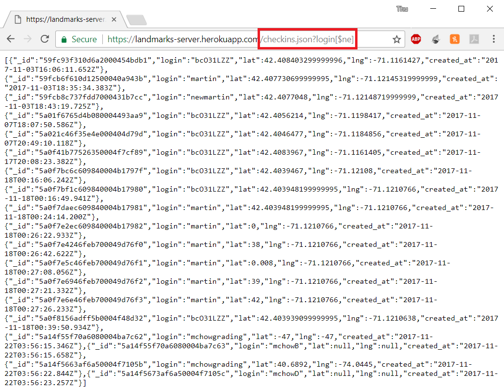

I was hired as a security consultant to document and resolve the security and privacy issues in the client's applications pertaining to the Landmarks server.
First I loaded the homepage to view what the app initially looks like, then I performed black box testing, followed by white box testing.
Then I used Postman, a tool to GET and POST to a specific server, post method to post a valid login, lat, and lng without any intent to break the application. Thus, viewing the homepage again should show my new post. Afterwards, I posted three more times, to try and break each of the input – login, lat, lng. For each, I used html encoding to load a webpage.
<iframe src= https://omfgdogs.com/ width="100%" height="100%" border="0"></iframe >
After attempting each, I reloaded the page to see if the webpage loaded, if it did, then the specific parameter has security flaw. After testing the POST parameters, I tested the GET parameters using Postman again. I tested the query for /checkins.json for normal login strings with no special characters, either in the database or not in the database. The return .json file should either contain a [] or the checkins for the specific login. I then tested the login query with operators such as $gt and $ne that compared the login strings in the database to the to the query.
https://landmarks-server.herokuapp.com/checkins.json?login[$gt]
After testing the parameters, I examined the client’s code to see if there were any other places where the issues I found through black box testing occurred. Then I examined if there were any authentication, hidden fields, and places where my client could potentially leak more information than necessary.
Many of the security and privacy issues stem from user’s input, when they are searching for something and when they are sending data. When sending data, the user can input their own login, and a legitimate latitude and longitude. However, this input contains security issues because the user can put in code as the login, and thus could change the layout of the webpage, presenting fraudulent web content, steal data, send false data, load dangerous malware and many more. In addition, when the user queries for a certain data, they were able to retrieve the whole database, through certain inputs. Moreover, the application provided a blatant way for users to get the database just by putting the correct link.
Issue: Cross-site Scripting
Location: /sendLocation – login parameter – POST METHOD
Severity: HIGH – users are able to write scripts and html to present all users with fraudulent web content, steal database information, load malware content, send annoying messages, hide information, and change the layout of the page. Basically, this allows the user to do whatever they want with the application, which makes this issue highly dangerous
Description: Issue was found through black box testing of POST parameters of sendLocation. Users are able to write whatever they want for the POST login parameter since there is no validation for the login input. Thus, they can write a scripts/html to do as they please with the webpage.
Resolution: Validate inputs by removing special characters, especially angle brackets
theLogin = req.body.login.replace(/[^\w\s]/gi, '');
Proof:
Using Postman to send parameters
Login = <script> alert(XSS);</script>
Login = <style> body{background-image: url("https://pbs.twimg.com/media/CLvKJFsUkAA4ETg.jpg");}</style>
Login = <iframe src= https://omfgdogs.com/ width="100%" height="100%" border="0"></iframe >
Issue: Database Injection
Location: /checkins.json – login query – GET METHOD
Severity: HIGH – users are able to retrieve the entire database which may contain information that the admin was hiding. In the client’s work, it’s a huge privacy issue since it allows other users to have data on every input’s location, even inputs that they did not know of. In general, if the database contains valuable information such as usernames/passwords, this flaw will be extremely vulnerable as it gives the user access to all the accounts on the server, even potentially the admin’s.
Description: Issue was found through testing of GET login query. Users are able to input compare operators to empty strings such as $ne (not equal) or $gt (greater than) so that any login that is not equal to an empty string or that is longer than an empty string gets returned, that is, essentially the whole database as you cannot put in an empty login.
https://landmarks-server.herokuapp.com/checkins.json?=login[$gt]
Resolution: Sanitize the query string by adding a new dependency – “mongo-sanitize” – and using the sanitize function to clean query injections
var sanitize = require('mongo-sanitize');
theLogin = sanitize(req.query.login);
Proof:

Issue: Bad Programming Practice
Location: /allcheckins.json – GET METHOD
Severity: MEDIUM – similar to the database injection, this method allows users to retrieve the whole database if they know the url. This is medium because it can easily be fixed, and users may not be able to obtain the url if the script is encoded/private. However, it can be high severity if this url is public, where anyone can access the whole database.
Description: Issue was found by examining client’s code. Users are able to retrieve the json file for the whole database if they put ~/allcheckins.json in the address bar.
Resolution: Remove this get function entirely. Users will not have access to the entire database if there’s no get function for it.
Proof:
Overall, security flaws through post input and query can be fixed by validating and sanitizing the input.
Future recommendations:
Client may add in authentication methods to prevent bots from spamming the database, however, they must be careful to not allow users to be able to retrieve data regarding authentication.
Client may also use hashing encode user login and storing the encoded logins, being careful about which hashing function they use. This may cause the program to run slower since it will have to encode and then decode.
NoSQL Injection in Mongodb
Hacking Nodejs and Mongodb
Web Security Notes
Node Mongo App Example
Postman